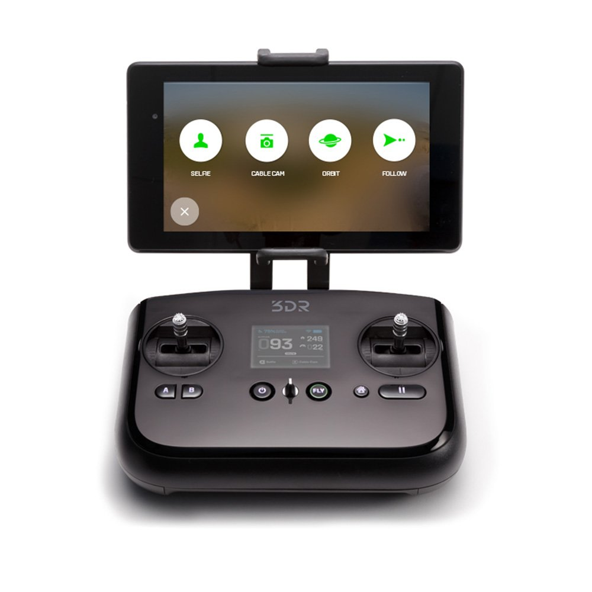

PRESENTATION30 minutes
Day 1 – Ground Control
Hack Our Drone Workshop — Dark Wolf Solutions
The GCS is any system used to monitor and control a UAV. It receives telemetry, displays a map, and sends commands.
The key insight for this module: a GCS is not magic — it is a computer on a network, usually joined to the drone by WiFi. That means all your normal network-hacking skills apply: scan it with nmap, find open ports, log in over SSH, read its files. The 3DR Solo's controller is literally a small Linux computer. So instead of "how do I hack a drone?", the practical question becomes "how do I hack the little Linux box that flies it?" — which we do hands-on in Lab 10.
GCS form factors:
| Type | Examples |
|---|---|
| Dedicated hardware | 3DR Sololink, DJI RC Pro, Skydio Remote |
| Android tablet/phone | DJI Fly, Solex, QGroundControl |
| Laptop/desktop | QGroundControl, Mission Planner, MAVProxy |
| Web browser | Auterion Suite, custom dashboards |

The 3DR Sololink is the dedicated RC controller + GCS for the 3DR Solo. It looks like a game controller, but inside it is a full Linux computer — the same i.MX6 chip family as the drone itself. That is the whole point of this module: the "remote control" is really a networked computer you can nmap and SSH into (Lab 10).
Hardware:
ARM Cortex-A9 (i.MX6) — same family as the Solo UAV companion computer
Embedded Linux (OpenEmbedded / Yocto)
802.11n 2.4 GHz WiFi radio (both client and AP modes)
Physical RC sticks and buttons
Android tablet mount (optional)
Software:
Runs a Linux OS with systemd
Creates WiFi AP: SoloLink_XXXXXXXX (2.4 GHz)
Bridges RC input to MAVLink MANUAL_CONTROL messages
Hosts STM32-based front panel controller (buttons, LEDs)
Runs sololink service that manages the GCS-UAV connection
Network architecture:
[Android Phone / Solex App]
| WiFi (SoloLink AP)
[3DR Sololink GCS]
| WiFi (SoloLink-to-Solo bridge)
[3DR Solo UAV]
| UART
[ArduCopter FC]
Attack surface:
SSH service accessible on SoloLink network (root login enabled by default)
Web API for controller configuration
STM32 serial interface
UART console accessible via physical teardown
Mission Planner (Windows, open source) is the reference GCS for ArduPilot.
Features:
Full parameter editor
Flight data display
Flight planning and simulation (with X-Plane)
Log analysis (MAVExplorer integration)
Firmware flashing
Attack surface:
Connects to flight controller via serial or network
Will execute arbitrary MAVLink commands against the connected vehicle
QGroundControl is the primary cross-platform GCS for both ArduPilot and PX4.
Capabilities:
Live telemetry display (attitude, position, battery, GPS)
Mission planning (upload/download waypoints)
Parameter viewer and editor
Log download and review
Firmware update
Understanding the network is essential for assessing the GCS. Almost every attack this week starts by getting onto this little network and learning who lives at which address.
How to read the table below: a /24 subnet means addresses 10.1.1.0–10.1.1.255 are all on the same local network. Two hosts matter: the controller at .1 and the drone at .10. Memorize those two — you will type 10.1.1.10 dozens of times.
3DR Solo networks:
| SSID | Role | Subnet |
|---|---|---|
SoloLink_XXXXXXXX |
GCS WiFi AP | 10.1.1.0/24 |
| (Solo internal) | UAV-GCS link | 10.1.1.0/24 |
IP addresses:
10.1.1.1 — Sololink GCS
10.1.1.10 — 3DR Solo UAV
Services on the GCS (Sololink):
22/tcp SSH (root login enabled)
5502/tcp Sololink API
Services on the UAV (Solo):
22/tcp SSH (root login enabled)
14550/udp MAVLink (GCS telemetry)
14551/udp MAVLink (secondary)
80/tcp HTTP (if GoPro is mounted: 10.5.5.9)
A typical GCS attack chain:
Connect to the GCS WiFi network (SoloLink_XXXXXXXX, default password: sololink)
Enumerate hosts with nmap 10.1.1.0/24
Identify SSH on GCS (10.1.1.1:22) and UAV (10.1.1.10:22)
Access SSH with default credentials (root, no password)
Pivot from GCS to UAV
Interact with MAVLink directly from the UAV shell
Exfiltrate flight logs, WiFi credentials, and configuration
| Component | Key Risk |
|---|---|
| 3DR Sololink | SSH root login, no password, exposed on WiFi |
| Specta Remote | Android ADB, APK vulnerabilities |
| SoloLink WiFi | WPA2 with default/known passphrase |
| MAVLink endpoint | Unauthenticated, accessible to all on network |
| GCS software | Full drone control plane — high-value target |